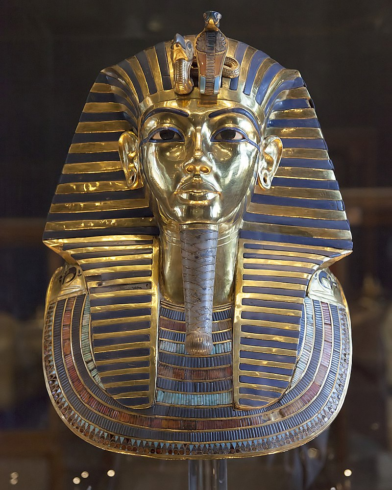

Aggregate of past events from the beginning of recorded human history and extending as far as the Early Middle Ages or the Postclassical Era. The span of recorded history is roughly less than five thousand years, beginning with the earliest linguistic records in the third millennium BCE in Mesopotamia and Egypt.
